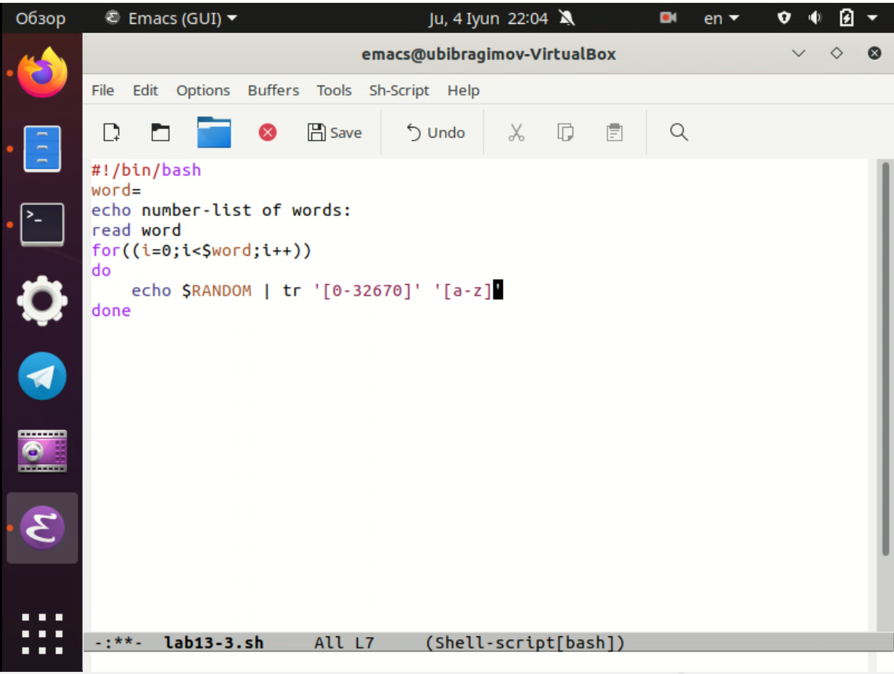

Отчёт по лабораторной работе №13 Ибрагимов Улугбек Ботырхонович
Изучить основы программирования в оболочке ОС UNIX, научиться писать более сложные командные файлы с использованием логических управляющих конструкций и циклов.
t1 дожидаться освобождения ресурса, выдавая об этом сообщение, а дождавшись его освобождения, использовать его в течение некоторого времени t2<>t1, также выдавая информацию о том, что ресурс используется соответствующим командным файлом (процессом). Запустить командный файл в одном виртуальном терминале в фоновом режиме, перенаправив его вывод в другой > /dev/tty#, где#— номер терминала куда перенаправляется вывод, в котором также запущен этот файл, но не в фоновом, а в привилегированном режиме. Доработать программу так, чтобы имелась возможность взаимодействия трёх и более процессовman с помощью командного файла. Изучите содержимое каталога /usr/share/man/man1. В нем находятся архивы текстовых файлов, содержащих справку по большинству установленных в системе программ и команд. Каждый архив можно открыть командой less сразу же просмотрев содержимое справки. Командный файл должен получать в виде аргумента командной строки название команды и в виде результата выдавать справку об этой команде или сообщение об отсутствии справки, если соответствующего файла нет в каталоге man1
$RANDOM, напишите командный файл, генерирующий случайную последовательность букв латинского алфавита. Учтите,что $RANDOM выдаёт псевдослучайные числа в диапазоне от 0 до 32767

В ходе выполнения Лабораторной работы №13, были приобретены навыки по написанию сложных скриптов, взаимодействие с логикой работы операционной системы.
while [$1 != "exit"] квадратные скобки нужно поменять на круглые скобки$ между двумя переменными символьного типа для оъединения нескольких строк в одно единую целую строкуseq - выводит последовательность целых или действительных чисел для передачи в другие программы, на языке bash её можно реализовать с помощью цикла forfor и ((some words)) без пробела, т.е. слитно